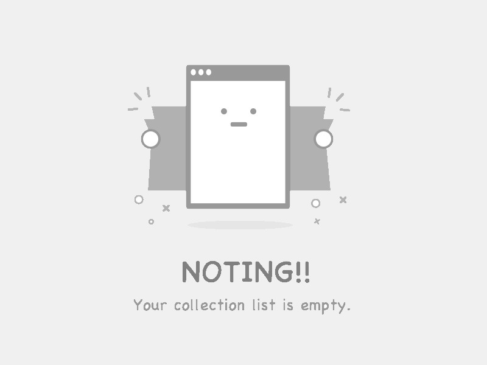

<section class="tabs">
  <div *ngIf="!feeds.length" class="empty">
    
  </div>
  <menu *ngIf="feeds.length" role="tablist">
    <button
      *ngFor="let feed of feeds; index as i"
      role="tab"
      aria-controls="tab-B"
      [attr.aria-controls]="'tab-' + i"
      [attr.aria-selected]="(selectedFeedId$ | async) === i ? true : null"
      (click)="select(i)"
    >
      {{ feed.title }}
    </button>
  </menu>
  <article
    class="article"
    *ngFor="let feed of feeds; index as i"
    role="tabpanel"
    [id]="'tab-' + i"
    [attr.hidden]="(selectedFeedId$ | async) !== i ? true : null"
  >
    <div *ngFor="let item of feed.items">
      <div class="title">
        <h4 style="margin: 0">
          <a [href]="item.link" rel="noopener noreferrer" target="_blank">{{ item.title }}</a>
        </h4>
        <button class="like" (click)="like(item.title, item.link)">❤️</button>
      </div>
      <div *ngIf="item.enclosure">
        
      </div>
      <div class="content" [innerHTML]="item.content"></div>
    </div>
  </article>
</section>
